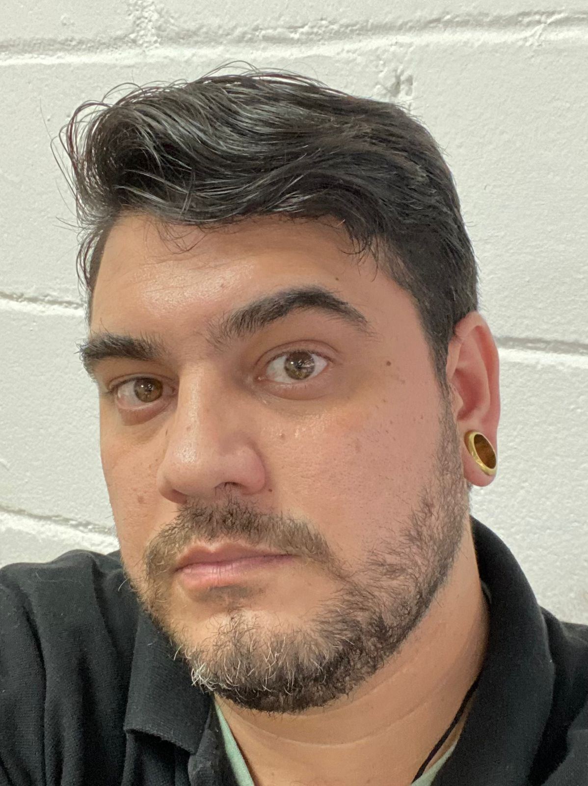

Sou Programador Web | Analista de Sistemas | Analista de monitoramento NOC.
Sou formado em Ciencia da Computação desde 2012, atuo na area de suporte técnico, analise de sistemas desde 2010.
Tenho experiencia com atendimento Service Desk, Suporte N2 presencial, Monitoramento de links e servidores.
Alguns dos meus hobbies são jogos de lógica, futebol, basquete, volei, programação, criação de sites.
No momento estou em busca de novos projetos e desafios.
Monitoramento dos alertas referente aos servidores dos clientes.
Acionamento de especialistas responsaveis pelos atendimentos dos chamados.
Sistemas de monitoramento utilizados: Zabbix, Grafana, Dynatrace, Office, GPLI entre outros.
Atendimento ao cliente.
Suporte aos usuários de impressoras, modelos HP e Sansung.
Atendimento de chamados e manutenções em geral.
Desenvolvimento de rotinas em ADVPL para o ERP Protheus.
Desenvolvimento de sistemas web internos para controle de estoque, vendas e financeiro.
Suporte técnico aos usuários dos sistemas.
Atendimento de chamados e Service Desk.
Criação de acessos e auxilio no reset de senha.
Suporte técnico aos usuários dos sistemas da AMBEV.
Atendimento de chamados e Service Desk.
Liberação e criação de acessos no sistema MV, auxilio no reset de senha, atendimento de chamados.
Suporte técnico aos usuários dos sistemas.
Projeto de criação de uma intranet com o intuito de fornecer com informações para os usuários da empresa.
Foi desenvolvido apartir de um arquivo em HTML com CSS, bootstrap e javascript
Sistema de monitoramento de alertas, utilizado para facilitar o controle da demanda de acionamentos.
Quer trabalhar comigo ou falar sobre um projeto?
Email: diogo.m.aguiar30@gmail.com
LinkedIn: Linkedin.com
GitHub: github.com